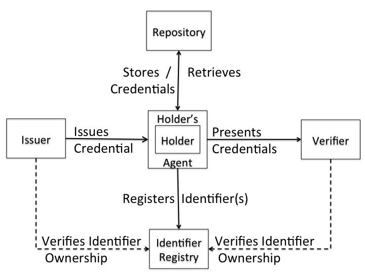

This document describes a typical lifecycle of a Verifiable Credential. Note that other lifecycles are contemplated and this document is meant purely as an example.
Comments regarding this document are welcome. Please file issues directly on GitHub, or send them to public-vc-comments@w3.org ( subscribe, archives).
This document starts by looking at how people are given identity attributes in real life, and then takes the lessons learnt from this to apply them to verifiable credentials.
Before diving into the lifecycle of verifiable credentials (VCs) let’s look at the lifecycle of the identity information that is inserted into VCs by the issuers.
When a baby is born he/she has no official identity and no information about him/her exists anywhere in either paper or digital format. One of the first things to happen is that the baby is registered and obtains a birth certificate. This contains the baby’s name and those of its parents. It may be a paper document or a digital one or both. It is issued by the national name registration authority. This initial registration is a critical component of all that follows.
As the baby progresses, he/she will be registered with a local doctor, a playgroup, a nursery school etc. and the amount of identity information stored about him/her by different organisations, in either paper or electronic format, will grow throughout the person’s lifetime. Sometimes one of these organisation’s might require the child’s birth certificate to authenticate the applicant, sometimes it may rely on identity information provided by the parent or other third party (typically another identity providing organization). The precise procedure is dictated by the organization according to its risk assessment.
As the child grows, and moves between addresses, playgroups, schools etc. the identity information held by an organization, which was once correct, is no longer correct. It has to be modified and/or deleted, e.g. a playgroup may simply destroy records about children who no longer attend it. Sometimes the update depends upon the child (or more likely his/her parents) informing the organization that the details they hold are no longer correct, at other times the organization may unilaterally make the update itself e.g. if a person has not been seen by an organization for a year or more the assumption may be made that the person is no longer interested in the service that the organisation offers and their identity information is simply deleted e.g. they are removed from the membership list. Unfortunately some organisations will not update the identity information that they hold, and then the person will have different conflicting identity information stored about them by different organisations. This may or may not cause the person problems in the future. It all depends on who the organisations are and what identity information they hold.
Ultimately the child will grow into an adult, and much more identity information will be collected, modified and deleted about them by dozens of organisations. Eventually the person will die. All the data held about the person should be updated and or deleted, to record this final fact. But in some cases it may not be. It might simply be archived as a record of past events, or may even be left intact and unaltered. If this information is not updated, then it is possible for an imposter to pose as the dead person and to assume their identity information. This is known to have happened many times.
The person has very little proof that he/she is the person being referred to in the identity information held by the various organizations that created it. He/she might have a paper certificate, but might not have. If the person wants to retrieve a copy of any of this identity information, he/she will have to be authenticated by each organization in order to prove that they are the person referred to in the information that the organization holds. Because this binding is quite weak in many cases, masquerade is possible e.g. people are known to have requested the birth certificates of third parties in order to assume their identities, and unqualified people are known to have masqueraded successfully as surgeons and performed operations on patients without having the necessary qualifications. Biometrics are the best known method of binding the human to the information that is held about him/her, and many modern information documents (either physical or electronic) contain a biometric of the human in order to bind them to the information e.g. a photograph of the holder on a driver’s licence, several fingerprints of the owner stored in a PC etc. Clearly biometrics are the way to go, but many organisations are not yet at this point, and often require little more than the name and address of the person for authentication purposes. This clearly facilitates the risk of identity theft.
Several key points to note are:
Immigrants and refugees are new entrants to a country, so with respect to the identity information that is already held about them by organisations in their new home country, they are like a newborn baby. However, there is one significant difference: they have an identity in the country they have left, which they may or may not want to bring with them. Consequently there are three cases to consider: the immigrant/refugee wishes to ‘import’ his foreign identity into his new home country; the refugee wishes to start with a completely new identity in his new home country, one that has no connection to his previous one (we assume that this option is not available to the immigrant who comes with a passport); and the immigrant/refugee wishes to masquerade in his new home country as a different person (the other ‘masqueraded’ person may be alive or dead, and may be from the same or different country to the immigrant/refugee).
If the person is an immigrant or refugee with a valid passport and other documentation such as paper certificates, then it will be relatively easy for him/her to be registered in several organizational information systems in the new home country. Some, such as the government, will accept the paper documentation ‘as is’ after running a standard validation test e.g. on the passport, others may accept it after doing more extensive validation of their own e.g. a university may allow registration onto a postgraduate degree course based on the foreign paper undergraduate degree certificate; whilst others may only partially accept it or not accept it all, and require the person to pass their own examinations before awarding them the qualification/certificate/membership (i.e. identity information) that they are claiming e.g. a foreign qualified doctor wishing to work in the UK National Health Service must undergo local exams before being allowed to practice.
When the person has no documentary evidence to prove his/her entitlement to the claimed identity information from the foreign country, this poses a significant challenge to the person. In the worst case, they may have to forgo importing this identity information, and strive to obtain it again from scratch in the new home country.
Once the person has been registered in the new home country, he/she can progress to amass identity information in the same way as the newborn baby who was registered at birth.
Since the home country has no information stored about the refugee, he/she can assume any identity they chose. It does not matter what identity they choose. The only constraints are that the identity information appears to be correct in terms of gender, age and ethnicity; does not already exist in the home country; and if very similar identity information does already exist, then the refugee must make it clear that they do not wish to assume this identity information and point out the differences between it and their own new identity information. Different countries will have different procedures for accepting refugees, but will have one thing in common. The refugee’s name will be recorded, and the country will store other identity information about him/her bound to that name. It is most likely today that biometric information will be captured from the refugee to ensure that they are a new person who does not already exist in the country’s records. The record may be paper based or electronic, but is most likely to be in both formats today e.g. an ID card with name and photograph, and an ICT based record with various biometrics and other identity information.
Once registered, the refugee can progress to collecting identity information from other organisations in the same way as the newborn baby who was registered at birth. Obviously there are some differences, since the latter is a child whilst the former is probably (though not always) an adult and therefore entitled to more and/or different services.
If the person has successfully masqueraded as someone else in his/her home country, and has arrived at the new country with a ‘valid’ passport in the masqueraded name, then it may be relatively easy for the foreigner to take on the fake identity by following the procedure outlined in 1.2.1 above. If the person arrives without any identity documentation, then he/she could follow the procedure outlined in 1.2.2 above since no identity information about the person is yet held by the new country. Consequently registering a false name and date of birth might be relatively straightforward, and no more difficult than registering the true information.
It may be more difficult for the person to successfully steal quality identity information about the masqueraded person, such as qualifications, employment records etc., because somehow they will have to prove to the new home country that this identity information is bound to themselves, and not to the masqueraded person. But as noted above, because the binding between a physical person and the identity information held about him/her by the issuing organization is often very weak, then it may be possible to trick the issuing organization and the home country into believing the masquerade.
Identity information about one person is held by multiple organisations in different forms, sometimes paper based, sometimes electronic, sometimes both. The identity information may be out of date in one or more organisations, and may conflict with that held by other organisations. The opportunity to steal identity information from some organisations by masquerading as someone else is relatively easy due to the weak bindings that the organization has between the physical person and the identity information it holds about them.
The objective of verifiable credentials is to allow people to obtain identity information about themselves in a digital format, which is cryptographically protected and strongly bound to themselves, thereby making masquerade and identity theft much more difficult than in today’s world, whilst simultaneously giving the person more control over who has access to his digital identity information and allowing the recipients to verify its authenticity.
The architecture for the Verifiable Credentials ecosystem is shown below.

Figure 1. The Verifiable Credentials Architecture
In Figure 1, the person holding the VC is the subject of the VC. However, the information content of a VC is owned and held by the issuer. The exception to this is the identifier to which the identity information is attached. The identifier is owned by the holder. The recipient of the VCs is the verifier, and it must trust the issuer(s) if it is to validate the VCs successfully. If it does not trust an issuer, the verifier may not accept a VC as valid information. The VCs are held by the holder in a repository of his/her choosing, which may be local or remote, centralized or distributed.
Given the above VC architecture and identity information lifecycle, then the lifecycle of a VC is as follows:
1. The holder obtains an identifier. This could be a public key or a blockchain distributed ID.
2. The holder contacts the issuer and requests a verifiable credential.
3. The issuer authenticates the holder, validates that he/she possesses the identifier, and checks its records to see if the holder is entitled to the requested credential. If any of these checks fail, the request is rejected. If they all pass, then
4. The issuer issues the verifiable credential and returns it to the holder
5. The holder stores the verifiable credential in his/her repository
6. The holder presents his/her verifiable credential(s) to a verifier
7. The verifier may accept the credentials without validating them, or may perform either partial validation or full validation of each VC at its choice. This in part depends upon the risk model adopted by the verifier, and the nature of the interaction with the holder. Credential validation includes the following (at least): the verifiable credential belongs to the holder, the holder possesses the identifier in the credential, the issuer is trusted to issue the information in the credential, the credential has not been revoked by the issuer, the credential is still within its validity period, and any other issuer policy information in the credential is respected (e.g. if the credential is one-time-use this is the first time it has been used, if the credential has a restricted set of verifiers then it is an allowed verifier).
8. At some point in time the issuer may decide to revoke the verifiable credential, after which it bears no liability for the acceptance of the credential by an verifier.
9. If the verifiable credential has an expiry time, then when this is reached, the holder should discard the credential.
Given the above VC model it is clear that a trust model is needed to inform the actors how to deal with the VCs they are presented with.
The VC trust model is relatively simple.
1. The verifier trusts the issuer to issue the VC that it receives (although this trust could be weakened depending upon the risk assessment of the verifier).
2. The issuer, the holder and the verifier trust the identifier registry to be un-corruptible and to be a correct record of which identifiers belong to which holders.
3. The holder trusts the issuer to issue true (i.e. not false) credentials, and to revoke them quickly when requested to do so.
Note in particular that the issuer and the verifier do not (need to) trust the repository, and that the issuer does not (need to) trust the verifier. Furthermore the user does not need to trust the repository to securely hold its VCs, although most users will. If the repository loses or corrupts a VC the holder can simply ask the issuer for a new VC, although this may be at some cost and inconvenience to the holder. Because of this, we may add a new optional trust rule:
4. The user trusts the repository to store his/her VCs securely, to not release them to anyone other than the user, and to not corrupt or lose them whilst they are in its care.
There are three different scenarios where delegation of authority are important to VCs.
Delegation of authority by the issuer increases the scalability of VCs by distributing the management and/or issuing of identity information to multiple issuers (which we will term Subordinate Issuers), rather than a single issuer (which we will term the Source of Authority - SoA). Holders now have relationships with the subordinate issuers rather than with the SoA.
Two different delegation mechanisms are typically used today, which we term downwards delegation and upwards delegation. An example of the former is the issuing of Visa credit cards by issuing banks rather than Visa Inc., and of the latter is the issuing of national student cards in the UK by the National Union of Students (NUS) rather than each university.
In the downwards delegation mechanism the SoA publishes a signed list of subordinate issuers, to which the SoA has delegated VC issuing. This list must be accessible to all verifiers who trust the SoA. The SoA can dynamically update this list as required. Holders will register with one of the subordinate issuers, and have their information managed by it, and their VCs issued by it. The verifier can validate any of the issued VCs by checking that the subordinate issuer that signed the VC (and any revocation list) is in the list of subordinate issuers signed by the SoA. Whilst more validation work needs to be done by the verifier e.g. list retrieval and two (or three) signature verifications instead of one (or two), the holder user-experience remains the same, as does the credential and revocation issuing mechanisms.
In the upwards delegation mechanism there is no need for the SoA to publish a list of trusted subordinate issuers. Instead, the subordinate issuers delegate the credential issuing to their SoA, which issues credentials on their behalf. A subordinate issuer’s primary task is to manage the holders and their identity information. Consequently the user must additionally register with the SoA in order to obtain a VC. This registration process must contain some authentication information known only to the holder and the subordinate issuer, such as an Activation Code. The SoA contacts the holder’s subordinate issuer by some proprietary means to validate the authenticator and confirm that the holder is entitled to the requested information before issuing the VC(s). With this mechanism, the verifier’s validation procedure does not change, since it only trusts the SoA, and all VCs are issued (and revoked) by the SoA. However, the holder’s registration procedure is more cumbersome and/or time consuming due to the double registration. Revocation is also more time consuming as it involves communication between the subordinate issuer and the SoA.
Delegation of authority by the holder allows a third party to assert a VC either for itself, or on behalf of the holder. Both acts are undertaken today. A holder may delegate (give) a club membership card to a friend, allowing the friend to enter the club. Power of Attorney (PoA) is where a third party is given legal authority to act on behalf of the holder, by the holder signing a PoA form. In both cases the original credential is not modified. In the former case the verifier has no evidence that the delegation actually took place. Consequently it can only work when the credential is a bearer credential i.e. the credential belongs to whoever holds it. In the PoA case, the verifier is given evidence (i.e. the signed PoA form) that the presenter is acting on behalf of the holder, as well as being presented with the original VC.
Recursion is a central concept of computer science. We can apply recursion to VCs to support both acts of delegation of authority by the holder to a third party. In this procedure, the holder becomes the issuer, the third party becomes the new holder, and the content of the new VC is the original VC of the holder. Since the procedure is recursive, the third party who is now the holder, could delegate the VC to a fourth party by becoming the issuer. Whether we want to allow infinite recursion, or limit it in some way is for further discussion. In the initial act of delegation, the holder should set his/her policy for the delegation e.g. whether the new holder can assert the VC for itself, or only on behalf of the original holder. In order to validate a delegated VC, the verifier modifies the usual VC validation procedure, to first obtain the information content of the VC. If it determines that this is a VC, the verifier recursively repeats this validation procedure on the embedded VC until the original information content is obtained. It then validates the original VC. If this is trusted, the issuer proceeds back up the delegation chain to the current holder, to ensure that each previous holder acted as issuer to the next holder.
In this scenario the verifier delegates the validation of the VC to another entity e.g. a front end gateway, to authorise the holder on behalf of the verifier. If the delegation process is not visible to the holder or the external world, then no special procedure is needed. The delegate can act on behalf of the verifier without any external entity being aware of this. But if the delegation process is externally visible, for example, the holder initially contacts the verifier and is redirected to the delegate, then the holder will be aware of this redirection. If there are policy fields in the VC that stipulate which holders are allowed to process the VC, then this redirection may violate this policy and the holder may be unwilling to follow the redirection. Even if the holder follows the redirection, the validation software may reject the VC when it processes the policy field. This form of delegation could be enabled by the verifier issuing a ‘delegation’ VC to the delegate. This VC would have the delegate as the subject, the verifier as the issuer, and the attribute would be ‘entitled to act on behalf of the issuer’.
The situation may arise when a holder determines that the identity information held by an issuer is incorrect, and consequently, that all VCs issued by the issuer to the holder contain incorrect information. This is a tricky situation, since the issuer is the owner of the information that it issues, but the holder knows whether the information is correct or not. Before changing any of the held information, the issuer needs to be convinced that it is incorrect, that the requester is the true holder (and not an imposter) and that the holder is not trying to either insert false information or remove true information.
Consequently it is recommended that all VC issuers publish their procedures by which holders may
i) obtain the complete set of information held by the issuer about the holder
ii) determine which subset of this information may be issued as VCs to the holder (and as a corollary, which must not be inserted into VCs)
iii) obtain one or more VCs
iv) ask for an issued VC to be revoked
v) ask for information held by the issuer to be updated
vi) resolve disputes arising from either the information held by the issuer about the holder, or the issuing and revoking of VCs by the issuer to the holder.
Legislation such as the EU GDPR [http://ec.europa.eu/justice/data-protection/reform/files/regulation_oj_en.pdf] provide the holder with the right to request a copy of the information held by the issuer, the right to correct erroneous information, and the right to lodge a complaint with a supervisory authority if any dispute with the issuer cannot be resolved amicably.
Sometimes issuers will issue credentials containing negative information about the holder e.g. points on a driving license. If the compound identity information, such as a driving license, has been atomized into multiple VCs by the issuer, e.g. to allow the holder to assert a subset of the information to an verifier, then holders are very likely to withhold VCs containing negative information.
Possible solutions to this problem are:
- issuers do not atomise negative information into separate VCs but bind it together with other identity information in a VC so that the holder cannot assert one piece of information without the other,
- verifiers can mandate that negative claims are presented, containing ‘null’ if the subject has no negative attribute. Examples here include: getting a ‘no criminal record’ credentials from the police when applying for a child care job.
- verifiers use out of band means to contact issuers to request any negative information that they possess about the holder.
After discussion within the VC working group it was agreed that the semantic of a claim in a VC is outside the scope of the current work, because what is a negative claim to one verifier may be a positive claim to another e.g. a conviction for causing grievous bodily harm may be positive to a nightclub owner looking for a bouncer. Consequently the topic of negative credentials is considered out of scope of the current work.
In the majority of cases the holder of a VC will be the subject of the VC. In some special cases a third party will be the holder of someone else’s VC. This may be the case when the holder has delegated his/her VCs to a third party, as described above. Alternatively, someone in authority may present VCs to verifiers, which refer to the verifier’s customers e.g. a credit reference agency presents a credit reference VC to an verifier. Alternatively a close associate of a subject may present the subject’s VC to an verifier on behalf of the subject e.g. a patient’s spouse may present a prescription VC to a pharmacist in order to collect the drugs for the patient.
In other special cases a VC may not contain a single subject, for example a marriage certificate contains two subjects, whilst bearer VCs do not contain a subject at all.
In most cases the verifier will need to know who is presenting a VC to it, in order to stop false claims being asserted by random holders. If the holder is the subject, then the verifier only needs to verify ‘proof of possession’ of the VC, without learning anything else about the identity of the subject, other than that contained in the VC. If the holder is not the subject, and the VC is not a bearer VC, then the issuer needs to verify that the holder is authorized to present the VC. In the case of delegation of authority, this can be done by validating the delegation chain. In the case of someone in authority presenting the VC, the verifier needs to authenticate the holder and validate that they are authorized to present the VCs of third parties. In some use cases, such as prescription VCs, the verifier may allow anyone to present the VC and only check that the VC is valid.
Bearer VCs are special in that they belong to whoever holds them. Consequently they can be stolen, copied or used by whoever gets access to them. For these reasons the security of bearer VCs needs careful consideration.
There are two aspects of revocation that are potentially of concern to VC stakeholders, in particular, to verifiers. The first is that which is typically referred to as revocation in the PKI world, and this means that the VC should not be trusted because either the cryptography is broken, or the private key of the issuer or subject has been stolen etc. In this first case, the underlying identity information is still valid e.g. the subject is still a citizen of the country, is still a member of the club etc. but the VC cannot be relied upon to verify this. For example, a thief might be able to use a cryptographically broken VC to masquerade as the subject, hence it needs to be revoked. The second aspect is that the underlying assertion is no longer valid e.g. the subject is dead or is no longer a member of the club etc. Since the VC working group is not interpreting the semantics of the VC attributes, then this latter aspect is out of scope of the working group (in just the same way that negative VCs are out of scope). Consequently we will only concentrate on revoking VCs as part of their life cycle, when the cryptography cannot be relied upon to verify the VC.